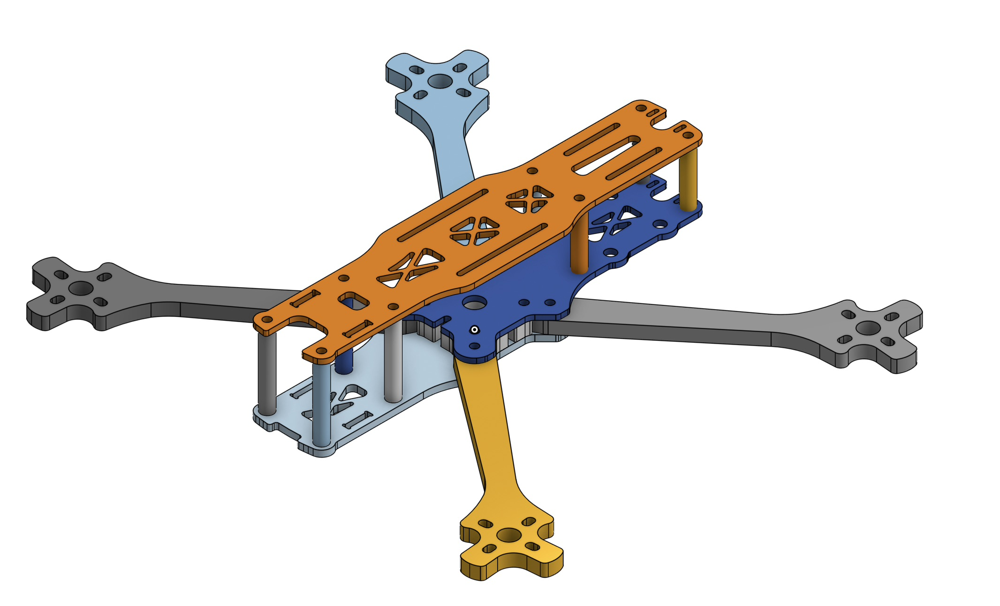

Capstone
For the majority of the year, I worked towards completing my capstone project: a fully custom-designed 3D printed drone with custom electronics and AI-powered object classification, pose tracking, facial recognition, and more.
Navigation
Build Goals
From the start, I wanted my drone to do the following:
- Have a long battery life
- Be able to record video in at least 1080p
- Have high processing power for AI-powered tasks
- Custom design as much as possible
Part Selection
The first step of making the drone was to figure out what parts I wanted to use. I had to consider many questions, such as: - What purpose will the drone be made for (racing, cinematography, autonomous missions, etc.)? - How big will the drone be? - What firmware will it use (ArduPilot, Betaflight, etc.)?
After considering many factors, I decided that I wanted to prioritize having a long flight time and powerful computers for autonomous missions. Those two choices meant that I would have to use a very large battery (meaning I would need a large drone to match), and that I need to use ArduPilot due to its support for GPS as well as a companion computer (more on this under the firmware section).
I did some more research on drones, and I knew I wanted to build a drone with 7" propellers (I ended up changing to 9"), since it would allow me to support a chassis large enough to house advanced electronics and a very large battery. For that size, I saw that 6S (6 cell) LiPo batteries were most popular in the community due to their high voltage (up to 25.2V) which allows for the drone to be more efficient. I settled on the Ovonic 4500 mAh 6S LiPo 100C XT90 Battery, since it had a very large capacity (99.9 wh!), a very high discharge rate, a bulky XT90 connector to allow for high power draw, and it was 6S.
After choosing the battery, I had to choose the motors, ESC, and electronic components. Since I chose a high-voltage battery, I went with relatively low 1050KV motors made by BrotherHobby. I saw good reviews about these online and they are made of high quality materials, which is why I chose them. The ESC is also made by BrotherHobby. It's a 4 in 1 ESC with support up to a 6S battery and can provide 65A per motor. I chose it since it had good reviews and was by far the cheapest ESC from a legitimate brand that could provide 65A per motor.
For the electronic components, I needed to ensure that they could support ArduPilot, and that I chose a comprehensive suite of sensors to allow for autonomous flight. For the MCU, I chose the STM32F767ZIT6 since it is powerful and has ample I/O for all of the sensors. For the sensors, I chose the ICM 29048 (IMU), LIS2MDL (magnetometer), LPS22HB (barometer), and NEO-M9N (GPS). I found boards from Adafruit at competitive prices that featured the sensors, power management systems (capacitors, step downs, resistors, etc.), along with a STEMMA QT connector for easy I2C connectivity. Insted of soldering the extremely tiny sensors directly to the board, I decided to go with these Adafruit boards to reduce complexity and increase reliability. The NEO M9N is large enough where I can solder it myself, so I bought the bare chip and added the power management system for the NEO M9N directly to the board (more on this under the Electronics Architecture section).
Additionally, I wanted a separate computer to drive the video recording and AI aspect. From the start, I knew that I wanted to use a Raspberry Pi 5 with the Raspberry Pi AI Hat+, capable of 26 TOPS. This combination allows for very powerful edge AI capabilities with high power efficiency, meaning that the drone can do real-time AI calculations in the air without drawing too much power.
After all this consideration, I ended up with a very high end parts list that would create a drone with very powerful capabilities. The next step was to design the chassis.
Chassis Design
The first component I designed was the chassis. Originally, I wanted to use the Source One, an open source drone chassis supporting up to 7" props. However, in its standard form, it had nowhere near enough space to fit my large battery, a Raspberry Pi 5, a camera, and all of the components for the flight controller (the board was not designed at this point). So, I downloaded the STEP files into Onshape and made significant changes to allow for the battery to fit.
 
However, after printing it out, I realized that the drone is far too heavy and that the chassis is too complicated with too many parts. Additionally, I realized that for the weight of the components, I would need bigger propellers. I looked at the website for the motors, and it said that they support up to 9" propellers, so I decided to switch.
Instead of modifying the chassis more to be stiffer and to support bigger props, I decided to start fresh with a clean sheet design. I wanted to keep the design as simple as possible and to make sure that it would support the larger propellers.
PCB Design
Electronics Architecture
Firmware
Assembly
TBD
Testing and Calibration
TBD
Next Steps
TBD